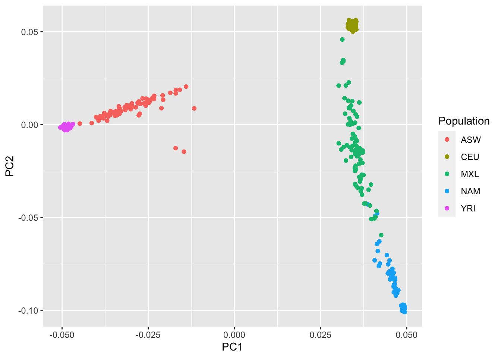
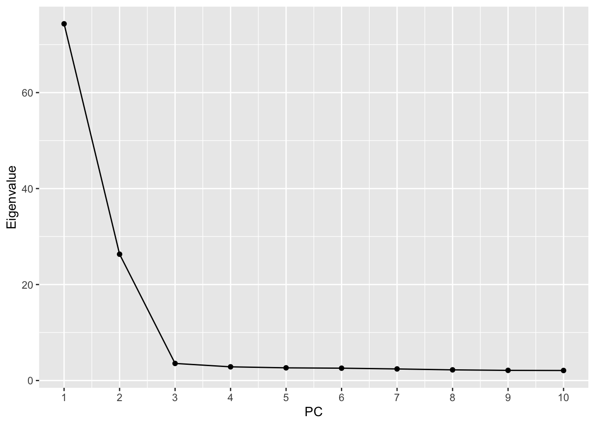
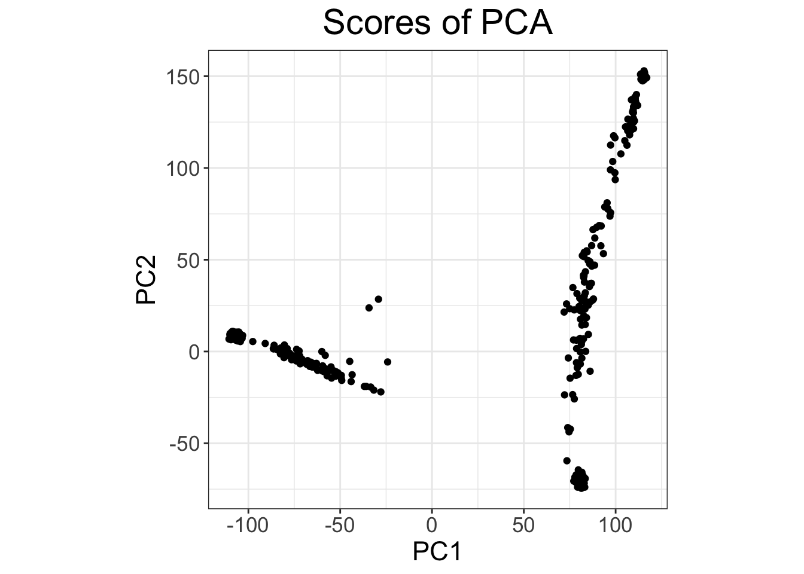
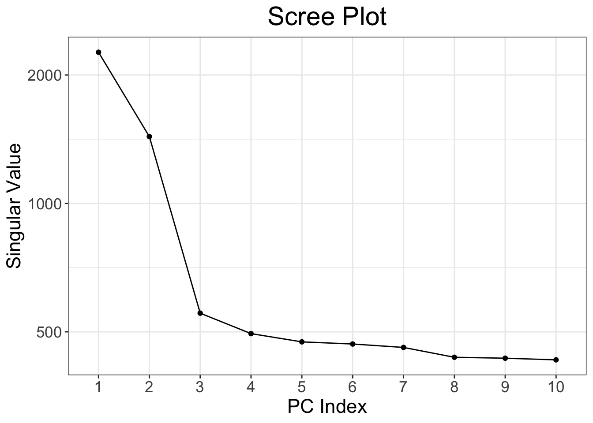
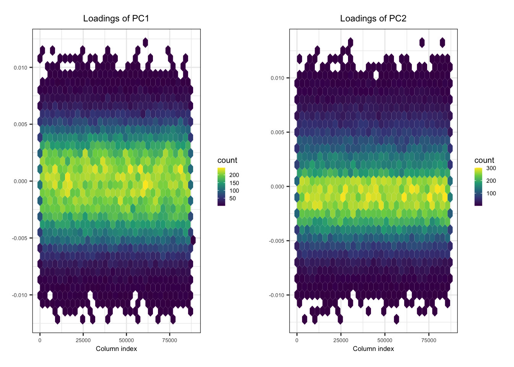
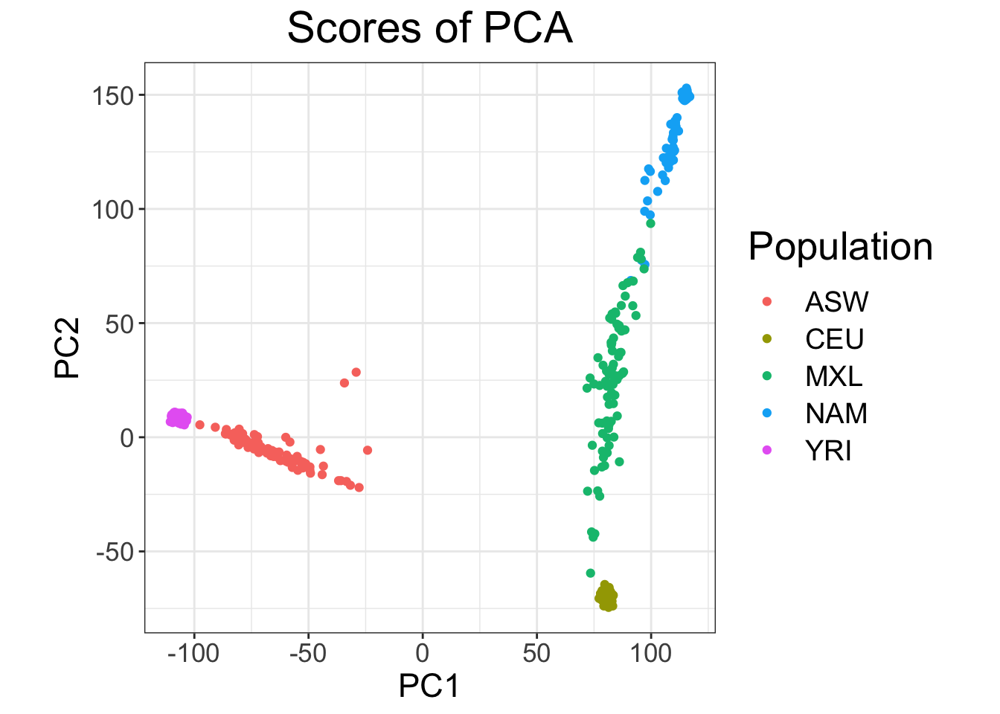
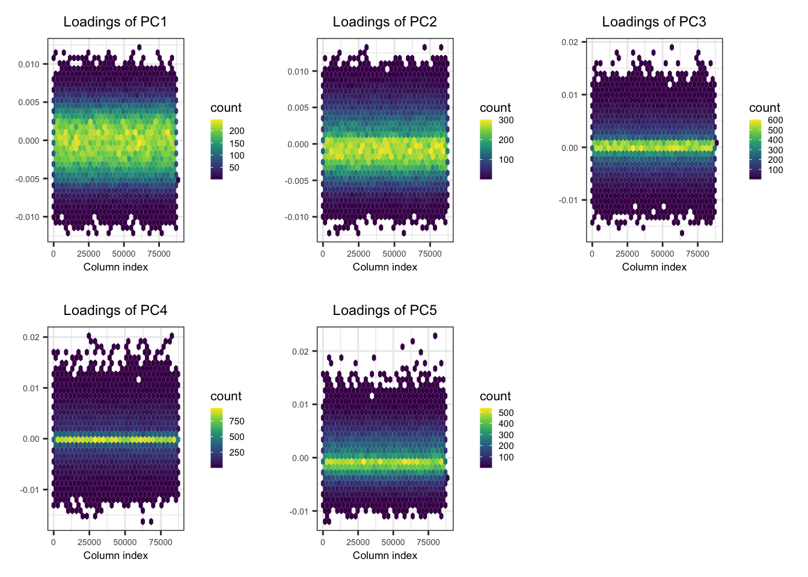
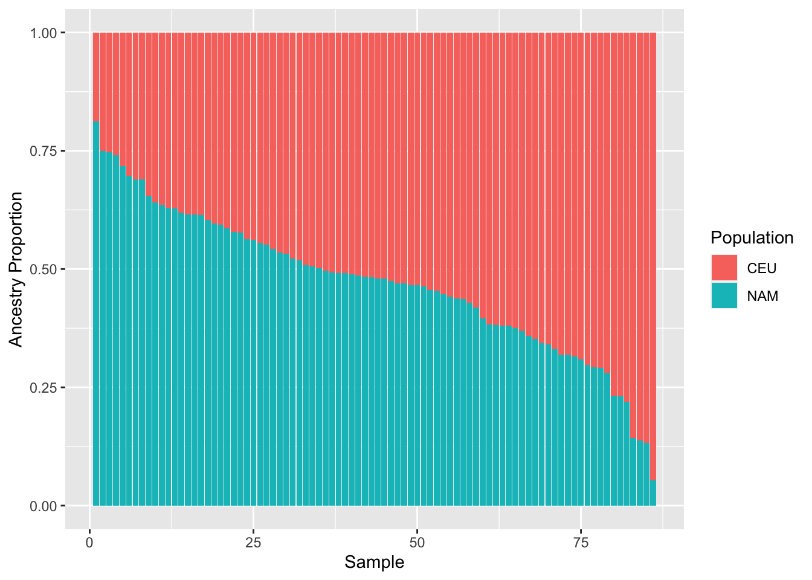
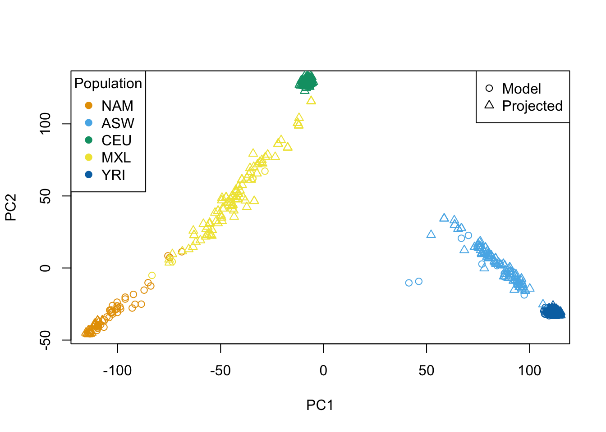

library(data.table)
library(dplyr)
library(bigsnpr)
library(ggplot2)
library(glue)Practical 2 Key - Population Structure Inference
Before you begin:
- Make sure that R is installed on your computer
- For this lab, we will use the following R libraries:
Introduction
What we’re exploring: Different populations have different patterns of genetic variation due to ancestry. We use PCA to capture these patterns and understand population structure - a critical confounder in genetic association studies.
We will be working with a subset of the genotype data from the Human Genome Diversity Panel (HGDP) and HapMap.
The file “YRI_CEU_ASW_MEX_NAM.bed” is a binary file in PLINK BED format with accompanying BIM and FAM files. It contains the genotype data at autosomal SNPs (i.e. chromosomes 1-22) for:
- Native American samples from HGDP
- Four population samples from HapMap:
- Yoruba in Ibadan, Nigeria (YRI)
- Utah residents with ancestry from Northern and Western Europe (CEU)
- Mexican Americans in Los Angeles, California (MXL)
- African Americans from the south-western United States (ASW)
File with ancestry labels assignment for each sample: Population_Sample_Info.txt
Data preparation
Let’s first load the HGDP data into the R session. We need to define the path to the directory containing the PLINK BED and the ancestry label files (change the path to the file location).
# change this to the directory on your machine
HGDP_dir <- "/SISGM19/data/" Also specify the path to the PLINK2 binary
plink2_binary <- "/SISGM19/bin/plink2" We can now read the PLINK BED and FAM files (recall the BED file is a binary file):
HGDP_bim <- fread(glue("{HGDP_dir}/YRI_CEU_ASW_MEX_NAM.bim"), header = FALSE)
head(HGDP_bim, 3) V1 V2 V3 V4 V5 V6
1: 1 rs9442372 0 1008567 1 2
2: 1 rs2887286 0 1145994 1 2
3: 1 rs3813199 0 1148140 1 2HGDP_fam <- fread(glue("{HGDP_dir}/YRI_CEU_ASW_MEX_NAM.fam"), header = FALSE)
head(HGDP_fam, 3) V1 V2 V3 V4 V5 V6
1: 1432 HGDP00702 0 0 2 -9
2: 1433 HGDP00703 0 0 1 -9
3: 1434 HGDP00704 0 0 2 -9When reading the ancestry label file, we need to make sure the order of samples matches that in the PLINK data:
HGDP_ancestry_df <- fread(glue("{HGDP_dir}/Population_Sample_Info.txt"))
HGDP_ancestry_df <- left_join(HGDP_fam[,c("V1","V2")], HGDP_ancestry_df, by = c("V1" = "FID", "V2" = "IID"))
head(HGDP_ancestry_df, 3) V1 V2 Population
1: 1432 HGDP00702 NAM
2: 1433 HGDP00703 NAM
3: 1434 HGDP00704 NAMExercises
Here are some things to look at:
- Examine the dataset:
- How many samples are present?
str(HGDP_fam)Classes 'data.table' and 'data.frame': 604 obs. of 6 variables:
$ V1: chr "1432" "1433" "1434" "1436" ...
$ V2: chr "HGDP00702" "HGDP00703" "HGDP00704" "HGDP00706" ...
$ V3: chr "0" "0" "0" "0" ...
$ V4: chr "0" "0" "0" "0" ...
$ V5: int 2 1 2 2 2 1 2 1 2 1 ...
$ V6: int -9 -9 -9 -9 -9 -9 -9 -9 -9 -9 ...
- attr(*, ".internal.selfref")=<externalptr> - How many SNPs?
str(HGDP_bim)Classes 'data.table' and 'data.frame': 150872 obs. of 6 variables:
$ V1: int 1 1 1 1 1 1 1 1 1 1 ...
$ V2: chr "rs9442372" "rs2887286" "rs3813199" "rs6685064" ...
$ V3: int 0 0 0 0 0 0 0 0 0 0 ...
$ V4: int 1008567 1145994 1148140 1201155 1452629 1878053 2013924 2023116 2072349 2072426 ...
$ V5: int 1 1 1 1 1 1 1 1 1 1 ...
$ V6: int 2 2 2 2 2 2 2 2 2 2 ...
- attr(*, ".internal.selfref")=<externalptr> - What is the number of samples in each population?
table(HGDP_ancestry_df$Population)
ASW CEU MXL NAM YRI
87 165 86 63 203 - Get the first 10 principal components (PCs) in PLINK using all SNPs.
cmd <- glue("{plink2_binary} --bfile {HGDP_dir}/YRI_CEU_ASW_MEX_NAM --pca 10 --out pca_plink")
system(cmd)This generates two files pca_plink.eigenvec containing the PCs (eigenvectors), and pca_plink.eigenval containing the top eigenvalues.
- Read in the PCs in R and make a scatterplot of the first two PCs with each point colored by population membership.
PC_df <- left_join(HGDP_ancestry_df, fread("pca_plink.eigenvec"), by = c("V1" = "#FID", "V2" = "IID"))
ggplot(PC_df, aes(x=PC1, y=PC2, color = Population)) +
geom_point()
- Interpret the first two PCs, what ancestries are they reflecting?
- Answer: PC1 primarily separates African populations (YRI, ASW) from European/Native American. PC2 separates European (CEU) from Native American (NAM). This reflects major continental ancestry differences.
- Read in the eigenvalues and make a scree plot corresponding for these first 10 PCs. Estimate the proportion of variance explained by the first two PCs.
eigenvalues_df <- fread("pca_plink.eigenval", header = FALSE)
ggplot(eigenvalues_df, aes(x = 1:10, y = V1)) +
geom_point() +
geom_line() +
scale_x_continuous(breaks = 1:10) +
labs(x = "PC", y = "Eigenvalue")
sum(eigenvalues_df$V1[1:2]) / sum(eigenvalues_df$V1)[1] 0.8308752- Now redo Question 2 above using the
bigsnprR package specifying a \(r^2\) threshold of 0.2 (i.e. LD pruning) as well as a minimum minor allele count (MAC) of 20.
obj.bed <- bed(bedfile = glue("{HGDP_dir}/YRI_CEU_ASW_MEX_NAM.bed"))
pca.bigsnpr <- bed_autoSVD(
obj.bed,
thr.r2 = 0.2, # R^2 threshold
k = 10, # number of PCs
min.mac = 20 # minimum minor allele count (MAC) filter
)
Phase of clumping (on MAC) at r^2 > 0.2.. keep 87127 variants.
Discarding 48 variants with MAC < 20.
Iteration 1:
Computing SVD..The default of 'doScale' is FALSE now for stability;
set options(mc_doScale_quiet=TRUE) to suppress this (once per session) message0 outlier variant detected..
Converged!- You can evaluate the PCA results using
# plot PC2 vs PC1
plot(pca.bigsnpr, type = "scores", scores = 1:2)
# scree plot
plot(pca.bigsnpr) 
# plot SNP loadings for the first two PCs
plot(pca.bigsnpr, type = "loadings", loadings = 1:2, coeff = 0.4)
- Make a scatter plot of the first two principal components (PCs) with each point colored according to population membership. Does the plot change from the one in Question 2?
plot(pca.bigsnpr, type = "scores", scores = 1:2) +
aes(color = HGDP_ancestry_df$Population) +
labs(color = "Population")
- Check the SNP loadings for the first 5 PCs.
plot(pca.bigsnpr, type = "loadings", loadings = 1:5, coeff = 0.4)
* **Interpret**: These show which SNPs have the largest effect on each PC. Different SNPs drive PC1 (ancestry differences) vs PC2 (other population variation).- Predict the proportion of Native American ancestry for the HapMap MXL based on the PCA output in Question 3 using one of the principal components and assuming that the HapMap MXL have negligible African Ancestry. Which PC is most appropriate for this analysis?
Hint: To compute the average PC2 value for individuals of CEU ancestry
ceu.mean <- with(PC_df, mean(PC2[Population == "CEU"]))Do the same for individuals of NAM ancestry. How can you express distances of the MXL individuals relative to those means based on the chosen PC?
nam.mean <- with(PC_df, mean(PC2[Population == "NAM"]))
mxl.prop.nam <- with(PC_df, (ceu.mean - PC2[Population == "MXL"]) / abs(ceu.mean - nam.mean))
summary(mxl.prop.nam) Min. 1st Qu. Median Mean 3rd Qu. Max.
0.05325 0.37687 0.48112 0.47207 0.57836 0.81147 - Make a barplot of the proportional Native American/European ancestry estimates based on your output of question 7.
- Answer: MXL individuals show substantial admixture (~40-60% Native American, 40-60% European), as expected for Mexican Americans with mixed ancestry.
sorted.props.nam <- sort(mxl.prop.nam, decreasing = TRUE)
df_mxl_props <- data.frame(
anc.props = c(sorted.props.nam, 1 - sorted.props.nam),
x = rep(1:length(sorted.props.nam), times = 2),
population.labels = rep(c("NAM", "CEU"), each = length(sorted.props.nam))
)
ggplot(df_mxl_props, aes(x = x, y = anc.props, fill = population.labels)) +
geom_bar(position="stack", stat="identity") +
labs(x="Sample", y = "Ancestry Proportion", fill = "Population")
Extra
- Check if there are samples related 2nd degree or closer. If so, run PCA as in Question 6 removing these samples then project the remaining samples onto the PC space. Plot the top 2 PCs.
- Why this matters: Related samples inflate PCs. Removing them gives more stable estimates of ancestry-driven variation.
- The command to check relatedness is:
# check for 2nd degree relateds or closer
relatedness_info <- snp_plinkKINGQC(
plink2.path = plink2_binary,
bedfile.in = glue("{HGDP_dir}/YRI_CEU_ASW_MEX_NAM.bed"),
thr.king = 2^-3.5, # threshold to identify 2nd degree relateds
make.bed = FALSE
)This returns a data frame which contains all pairs of individuals related 2nd degree or closer.
str(relatedness_info)'data.frame': 362 obs. of 8 variables:
$ FID1 : chr "1563" "1567" "1567" "1570" ...
$ IID1 : chr "HGDP00845" "HGDP00849" "HGDP00849" "HGDP00852" ...
$ FID2 : chr "1556" "1556" "1561" "1551" ...
$ IID2 : chr "HGDP00838" "HGDP00838" "HGDP00843" "HGDP00832" ...
$ NSNP : int 150801 150802 150832 150816 150822 150814 150819 150815 150674 150796 ...
$ HETHET : num 0.0976 0.1069 0.1059 0.099 0.1022 ...
$ IBS0 : num 0.0221 0.0219 0.0223 0.0219 0.0227 ...
$ KINSHIP: num 0.104 0.126 0.13 0.118 0.118 ...- We can then remove them when calling
bed_autoSVD()using theind.rowargument.
ind.rel <- match(c(relatedness_info$IID1, relatedness_info$IID2), obj.bed$fam$sample.ID) # relateds
ind.norel <- rows_along(obj.bed)[-ind.rel] # unrelateds
# Run PCA on unrelateds
obj.svd2 <- bed_autoSVD(
obj.bed,
thr.r2 = 0.2, # R^2 threshold
k = 10, # number of PCs
min.mac = 20, # minimum minor allele count (MAC) filter
ind.row = ind.norel
)
Phase of clumping (on MAC) at r^2 > 0.2.. keep 77173 variants.
Discarding 12226 variants with MAC < 20.
Iteration 1:
Computing SVD..
0 outlier variant detected..
Converged!- Use
bed_projectSelfPCA()to project related samples on the PC space. (Hint: This tutorial document frombigsnprwill be helpful – see the last section ‘Project remaining individuals’)
PCs <- matrix(NA, nrow(obj.bed), ncol(obj.svd2$u))
# PCs for unrelateds
PCs[ind.norel, ] <- predict(obj.svd2)
# Project relateds on PC space
proj <- bed_projectSelfPCA(
obj.svd2,
obj.bed,
ind.row = ind.rel
)
PCs[ind.rel, ] <- proj$OADP_proj
# Plot the top 2 PCs with projections
pop_palette <- c("#E69F00", "#56B4E9", "#009E73", "#F0E442", "#0072B2")
names(pop_palette) <- unique(HGDP_ancestry_df$Population)
plot( # for unrelateds
PCs[ind.norel, 1:2],
col = pop_palette[HGDP_ancestry_df$Population[ind.norel]],
pch = 1, xlab = "PC1", ylab = "PC2"
)
points( # for relateds
PCs[ind.rel, 1:2],
col = pop_palette[HGDP_ancestry_df$Population[ind.rel]],
pch = 2
)
# add the legends
legend("topleft", legend = names(pop_palette), col = pop_palette, pch = 19, title = "Population")
legend("topright", legend = c("Model", "Projected"), col = c("black", "black"), pch = c(1, 2))
Key Takeaways from This Practical
Concepts you should understand:
- PCA captures ancestry: PC1/PC2 represent continental-level ancestry differences, not individual SNPs
- Population stratification = confounding: If cases/controls differ in ancestry, you see spurious associations
- LD pruning improves signal: Correlated SNPs don’t add information; pruning reduces noise in PCA
- PCA is exploratory: Use it to identify population structure, then adjust for PCs in downstream analysis
- Admixture detection: Some samples show mixed ancestry from multiple populations
Important caveats:
- PCs are population-specific: PCs calculated in one population may not transfer to another
- LD pruning parameters matter: Different thresholds can change results
- Sample size affects PC estimates: Projected samples may be less reliable
Next session: We’ll use PCs as covariates to adjust for population structure in genome-wide association tests.